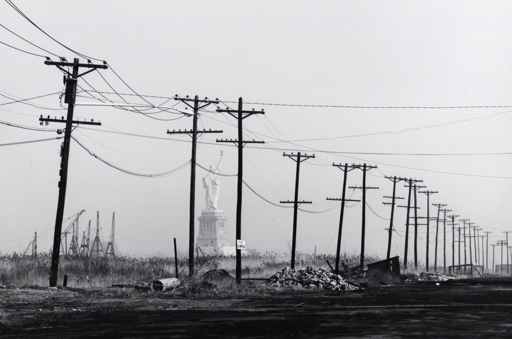

Art? 5th Ave. and 56th St, 1988

Walking down 5th Ave, 1985. Obligatory Tower Records bag.
Art? 5th Ave. and 56th St, 1988
Walking down 5th Ave, 1985. Obligatory Tower Records bag.
Non-NYC public service announcement.

Avenue B near 12th Street, 1985
John and Paul struggling to get out of the garbage, 1975

Al Fenn. A snowstorm hits New York City in February 1960.
From Time & Life Pictures/Getty Images
8th Avenue, midtown, 1970s

NY skyline, 1989
Hi there. Love your pics. Are they all yours? Tough to find them elsewhere online!
Hi, thanks! No, most of them aren’t mine. I just find them and post them.
Broadway and 79th, 1980s
Hey, baby, looking good!
James Jowers Broadway, New York City 1967

absolutely loved this blog, please keep posting these
Thanks, much appreciated!
Kids on the subway, 1985
The GG train in 1970. Was this really a thing? I guess I didn’t spend enough time in Queens.

David Gahr The Lovin’ Spoonful in Front of Cafe Figaro, Greenwich Village, New York City 1966
James Jowers 2nd St, New York City 1967

West Broadway and Prince, 1985
5-star accommodations near the WTC, 1976

Life in Brownsville Brooklyn, 1972
Rooftops from 27th & Park Ave South, 1980
Professional Percussion Center, West 46th Street, 1976

1960s style on Bleecker Street

Summer in Alphabet City, 5th Street between C and D, 1984

Tee many martoonis

85th and 5th, 1972

Guardian Angels, 1985

Seen in the Bronx

Tagged hard
The view from Central Park, 1971

Cold day on the train
Garment district, 1976

Cream & rum, yum!
Bronx ladies, 1970

Crime in progress
Gathering in Central Park to view an eclipse, 1970

If you fall asleep on the subway, Frank Sinatra’s ghost watches over you and keeps you safe. True fact.

Love in the rain, 1972
Lazy but badass skateboarder, 1985
To those of you wondering why (and maybe even mad) I called her lazy: It was a joke. Because she’s riding the subway even though she’s got a skateboard. Get it?
34th and 9th, 1980s
undr:
Viviane Moos. New York. 1990s

Bleecker Bob, posing outside Bleecker Bob’s, 1978
Reading “Where to Score Cocaine Weekly” on his morning commute

Sailing Into Ecstasy, Times Square, 1984 (48th and Broadway)
Subway 1986
On the D train, 1985


The area soon to become Liberty State Park, in the 70s.

Times Square in 1974. I can’t say I remember Hubert’s Museum. It looks, frankly, a bit underwhelming.

Bowery, 1976. Why am I thinking that Sal’s Majestic wasn’t really very majestic?